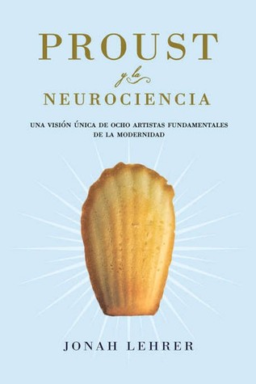

Proust y la neurociencia: una visión única de ocho artistas fundamentales de la modernidad
Reseña por Jorge I. Zuluaga

Ver reseña en GoodReads (necesita cuenta)
Este era un libro que tenía en el "congelador" de mi biblioteca casi desde el año 2015 cuando una buena amiga, Ana Ochoa, una mujer muy inteligente y culta, me lo regaló después de una charla. Obviamente por la fuente del libro sabía que tenía que tratarse de un texto significativo. Este fin de año de 2025 al fin decidí sacarlo del "congelador" y ver de que iba.
¡El contenido me dejo de una pieza! Una asombrosa intersección entre ciencias y artes como pocas veces lo había leído.
Como deben haberlo leído de la presentación (incluso del subtítulo) el texto hace un recorrido por la obra y por la relación con las ciencias que tuvieron personalmente o a través de su obra, 8 artistas contemporáneos.
El libro es una verdadera delicia para quiénes sean apasionados de ambas, las artes y las ciencias. Combina de forma brillante citas entre sensibles y eruditas a las obras artísticas de los personajes seleccionados (Whitman, Proust, Cézanne, Stravinsky, Woolf, para citar algunos) y referencias y explicaciones científicas bien seleccionadas sobre los aspectos del mundo que abordaron sus obras: la visión (Cézanne), la consciencia (Whitman), el olfato y el gusto (Escoffier), el lenguaje (Stein), entre otras.
Me gustaron mucho los ensayos sobre el sentido del gusto y la increíble historia del sabor a umami (Auguste Escoffier, la esencia del gusto), las extrañas formas en las que opera la memoria y el contraste con las erróneas concepciones "computacionales" que tenemos de ella (Marcel Proust, El método de la memoria), el curioso y, para mi, perturbador mecanismo de funcionamiento de la visión y la conciencia (Paul Cézanne, El proceso de la visión) en el que descubrí el que podría ser quizás un poderoso argumento para demostrar que los animales no humanos con los que vivimos (perros y gatos principalmente) deben tener definitivamente una consciencia tan compleja como la nuestra (un argumento que sin embargo no me cabe en una reseña). Me anime a escuchar con otra actitud la obra, ya muy admirada por mi pero después de este libro más admirada aún, "La Consagración de la Primavera" de Igor Stravinski que es protagonista del capítulo correspondiente a la manera como se relaciona nuestro cerebro con la música (Igor Stravinski, La fuente de la música).
Definitivamente uno de mis libros favoritos de todos los tiempos. Lo tendré en un lugar accesible de mi biblioteca para volver a leer los capítulos más interesantes.
Repito: para quiénes amamos las artes y las ciencias, este libro no tiene página mala.